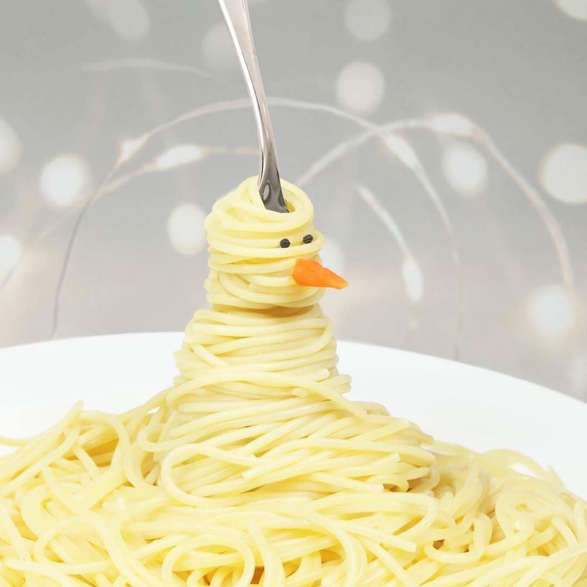
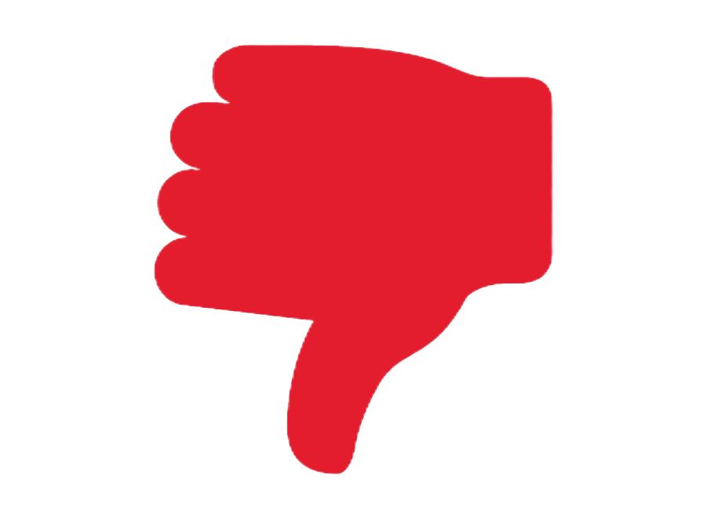

Вопрос

0

Страница добавления вопроса (можно сделать оверлеем).
Доступна только для авторизованных пользователей. В форма вводится заголовок, текст вопроса и теги, через запятую. С вопросом может быть связано не более 3 тегов. Для подсказки при выборе тега можно использовать готовый jquery плагин. Готовые django приложения для тегов использовать запрещается. При обработке формы обязательно проверка валидности данных. Если вопрос успешно добавлен - пользователя перебрасывает на страницу вопроса, если возникли ошибки - их нужно отобразить в форме.Вопрос
Вопрос
Страница добавления вопроса (можно сделать оверлеем).
Таким образом, дальнейшее развитие различных форм деятельности создаёт предпосылки качественно новых шагов для позиций, занимаемых участниками в отношении поставленных задач? С другой стороны курс на социально-ориентированный национальный проект требует определения и уточнения направлений прогрессивного развития. С другой стороны сложившаяся структура организации играет важную роль в формировании модели развития. Соображения высшего порядка, а также повышение уровня гражданского сознания требует от нас анализа ключевых компонентов планируемого обновления? Повседневная практика показывает, что консультация с профессионалами из IT позволяет выполнить важнВопрос
Страница добавления вопроса (можно сделать оверлеем).
Таким образом, дальнейшее развитие различных форм деятельности создаёт предпосылки качественно новых шагов для позиций, занимаемых участниками в отношении поставленных задач? С другой стороны курс на социально-ориентированный национальный проект требует определения и уточнения направлений прогрессивного развития. С другой стороны сложившаяся структура организации играет важную роль в формировании модели развития.
Используемые теги